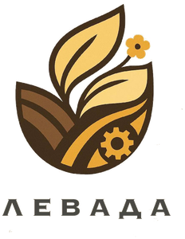
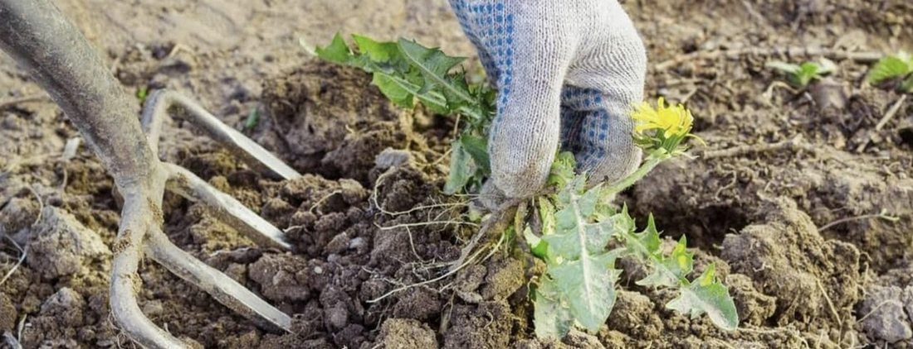
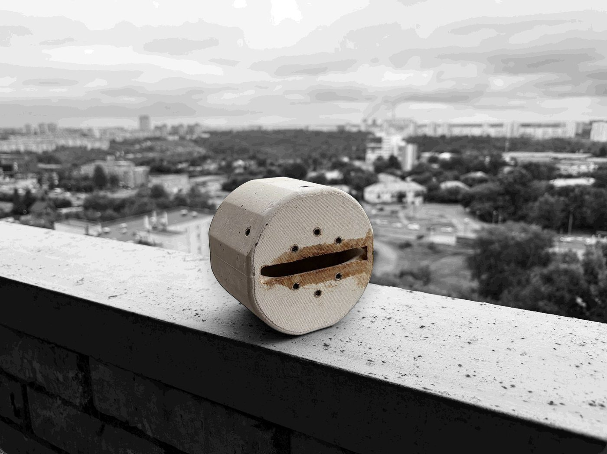
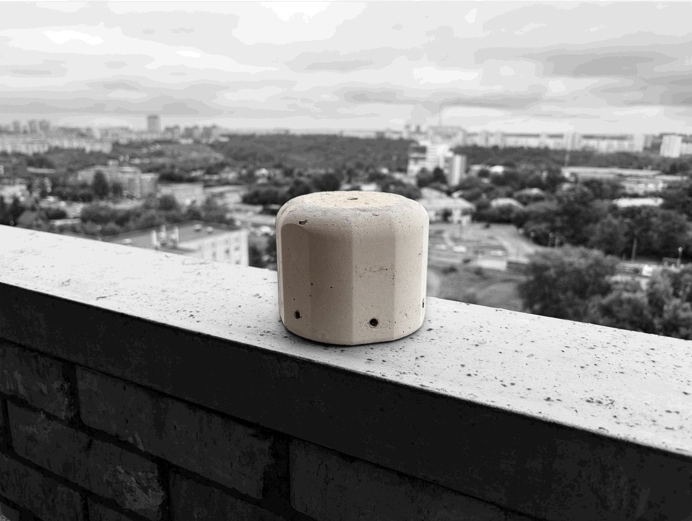
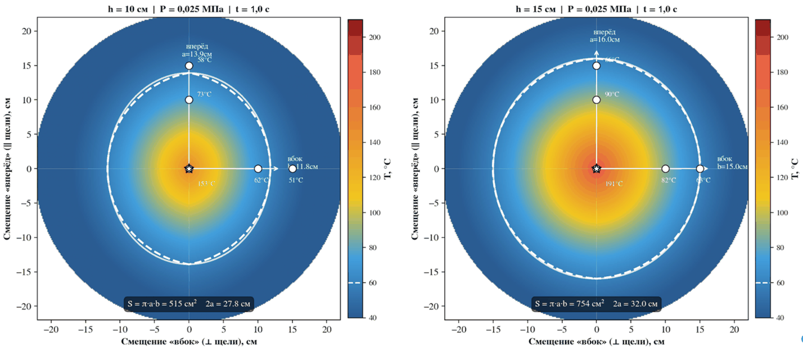
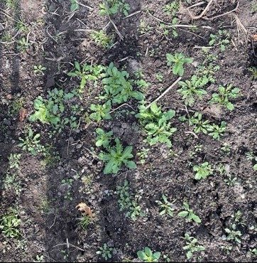
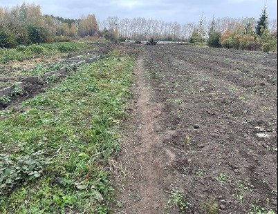
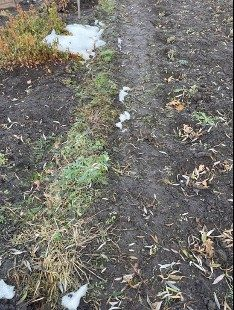

Термическое воздействие напрямую разрушает клетки сорняка, показывая одинаковую эффективность как против злостных и резистентных видов, так и против любой нежелательной растительности.
Параметры теплового воздействия установлены аналитически и на практике, что позволяет работать комфортно и безопасно даже в непосредственной близости от культурных растений, не вызывая их повреждения.
После обработки установкой ГДТ-01 в почве не остаются химические остатки, характерные для применения гербицидных средств. В отличие от механической обработки, кратковременное термическое воздействие не приводит к стимулированию прорастания семян сорных растений, находящихся в глубинных слоях почвенного банка семян. Применение метода огневой культивации позволяет снизить потребность в повторных обработках, не оказывает механического воздействия на структуру почвы и не приводит к нарушению её естественной микробиологической активности, что определяет его высокую экологическую эффективность.
Сорная растительность снижает урожайность на 30-40%, а при сильном засорении - на 50% и более.
Гербициды позволяют существенно сдерживать засорённость посевов, однако не решают этот вопрос полностью: в мире известно около 520 биотипов сорняков (в России - порядка 150), со сформированной устойчивостью к действующим веществам и их комбинациям. Их применение вызывает накопление остаточных веществ в сельскохозяйственной продукции и почве. Из года в год эти остатки способны угнетать полезную почвенную микрофлору, от которой зависит плодородие участка.
Стоимость гербицидов при этом ежегодно растёт, а составы становятся сложнее - производителям приходится преодолевать устойчивость сорняков и расширять спектр препаратов. Растут и экологические риски: у многих современных действующих веществ выше токсичность и заметнее косвенные эффекты - это опасно не только для людей и животных, но и для пчёл-опылителей.

Механические методы включают различные способы физического удаления и подавления сорной растительности: обработку почвы культиваторами и междурядными орудиями, ручную прополку, использование ручного инструмента (тяпки, мотыги, плоскорезы).
Культиваторы эффективно работают на открытых участках и в междурядьях, однако их применение ограничено в пристеблевой зоне, где высок риск повреждения культурных растений. Ручные методы позволяют более точно удалять сорняки, но остаются трудоёмкими и малопроизводительными, особенно на больших площадях.
У механической борьбы есть и побочные эффекты, при многократных проходах техники почва уплотняется, также механическое воздействие провоцирует прорастание семян из глубоких слоёв почвенного банка.
Для термического разрушения клеточных мембран сорняка необходимо обеспечить прогрев всех тканей растения в пределах летального диапазона - все режимы работы ГДТ-01 обеспечивают многократный запас, значительно превышающий пороговые значения.
Фактическая временная экспозиция теплового воздействия на сорняк при ручной эксплуатации горелки составляет ≈360 мс - в 2,7 раза выше летального минимума, минимальное же возможное температурное воздействие на ткани сорняка составляет ≈191 °C - в 2,5 раза выше летального минимума. Агрономический результат достигается с гарантированным запасом.
Резистентность к термическому воздействию биологически невозможна. Метод не оставляет химических остатков в почве и не вредит её микрофлоре.
| Критерий | Гербициды | Механическая культивация | Ручная прополка | Кровельные горелки, электронагреватели | ГДТ-01 |
|---|---|---|---|---|---|
| Эффективность против резистентных сорняков | Низкая | Средняя | Высокая | Высокая | Высокая |
| Работа в защитной зоне растения | Ограничена | Практически невозможна | Возможна | Ограничена | Возможна |
| Остаточные количества пестицидов | + | - | - | - | - |
| Риск повреждения культурных растений | Средний | Высокий | Низкий | Низкий | Низкий |
| Производительность | Высокая | Высокая | Низкая | Средняя | Высокая |
| Экологичность | Низкая | Высокая | Высокая | Высокая | Высокая |
Принципиальное отличие от всех существующих огневых культиваторов - диффузионное горение вместо инжекционного.
В горелках инжекционного типа (Mingozzi PTRB, КО и др.) топливо и воздух смешиваются до воспламенения, что создаёт риск обратного удара пламени и требует строгого контроля соотношения компонентов и условий окружающей среды.
В диффузионной горелке пропан и кислород воздуха смешиваются непосредственно в зоне горения - обратный удар пламени невозможен. Температура держится ровной по всему объёму факела - поэтому результат гарантировано достижим при широком диапазоне угла наклона горелки.
Применимость метода огневой культивации была подтверждена производственной проверкой на посадках земляники садовой в УОХ «Сад Мичуринцев» (НГАУ) в октябре 2025 года - подробный разбор испытания и его результатов приведён в разделе «Результаты».


Параметры установлены экспериментально в ходе лабораторных исследований, и подтверждены практикой. Оптимальный режим выявлен по критерию максимальной температуры воздействия при минимальном расходе газа.
| Высота среза горелки над почвой | h = 15 см |
| Рабочее давление газа | P = 0,025 МПа |
| Режим истечения газа | Дозвуковой |
| Минимальное температурное воздействие, оказываемое горелкой на поверхность сорняка | 191,3 °C |
| Температура факела в рабочей зоне | 1 200-1 600 °C |
| Летальный порог для клеток растений | 55-94 °C |
| Превышение летального порога | в 15-25 раз по температуре, в 2,7 раза по экспозиции |
| Ширина захвата одной горелки (2a) | 32,0 см |
| Полуось вдоль щели (a) | 16,0 см |
| Полуось поперёк щели (b) | 15,0 см |
| Площадь пятна обработки | 754 см² - в 1,2 раза больше площади листа А4 |
| Форма пятна обработки | Равномерный эллипс |
| Максимальная скорость обработки | не более 10 км/ч |
| Допустимый угол наклона горелки | не более 30° |
| Скорость движения оператора | 1,5 км/ч |
| Расчётная производительность | 4,8 сотки/ч |
| Время обработки одной сотки | 12-13 минут |
| Реальная выработка за час (с учётом остановок) | 3,5-4 сотки |
В ходе лабораторных и натурных испытаний было установлено влияние высоты расположения среза горелки над почвой и давления газа в системе на температуру воздействия, а также произведено картирование зоны теплового воздействия.
Температура растёт не прямо пропорционально высоте горелки над почвой - есть оптимум - 15 см: на такой высоте горелка работает наиболее эффективно, хотя агрономический результат достигается при любом из режимов.
| h, см | T, °C | Примечание |
|---|---|---|
| 10 | 153,0 | Факел не успевает развиться |
| 15 | 191,3 | Оптимальный режим |
| 20 | 118,0 | Эффективность обработки снижается ввиду чрезмерного разбавления продуктов сгорания воздухом |
| 25 | 93,7 |
Оптимум давления газа в системе также приходится не на максимальное значение, потому что при дозвуковом истечении газ сгорает наиболее полно. При этом агрономический результат достигается при любом из выбранных давлений.
| P, МПа | T, °C | Режим истечения |
|---|---|---|
| 0,025 | 178,3 | Дозвуковой (рекомендован) |
| 0,075 | 157,7 | Переходный (минимальное температурное воздействие, нестабильный факел) |
| 0,100 | 195,0 | Закритический режим истечения, узкий факел |
При h = 15 см зона воздействия (T ≥ 60 °C) близка к круговой (a/b = 1,07) - факел рассеивается равномерно во все стороны. Площадь пятна при h = 15 см на 46% больше, чем при h = 10 см при одинаковом расходе газа.

В октябре 2025 года применимость метода была проверена в производственных условиях - полевой опыт на посадках земляники садовой в УОХ «Сад Мичуринцев» (НГАУ). Исходная засорённость - 17,6 шт/м², доминирующие виды: ярутка полевая, ромашка непахучая, подорожник большой, осот розовый. По результатам проверки зафиксировано среднее снижение засорённости на 94,43%, повреждений посадки земляники не выявлено.



Все цифры на сайте - не пустые маркетинговые заявления, а результат научной работы, верифицированный полевыми испытаниями.
Генеральный директор ООО «Левада», выпускник НГАУ (35.03.04 «Агрономия»), Университет биотехнологий (35.04.06 «Агроинженерия»)
Разработка горелки диффузионного типа ГДТ-01 - тема выпускной квалификационной работы. Проект получил поддержку Фонда содействия инновациям по программе «Студенческий стартап», прошёл полный цикл лабораторных испытаний и производственную проверку на базе УОХ «Сад Мичуринцев» НГАУ.
Левадний З. А., Яковлев Д. А. Перспективы применения огневой культивации при уничтожении сорной растительности // Сибирский вестник сельскохозяйственной науки. 2025. Т. 55. № 4(317). С. 103-110. DOI: 10.26898/0370-8799-2025-4-11
Левадний З. А., Яковлев Д. А. Обоснование технических средств для реализации технологии огневого уничтожения сорняков // Материалы XVI Международной научно-практической конференции, посвящённой 80-летию Инженерного института. Новосибирск: ИЦ НГАУ «Золотой колос», 2024. С. 45-47.
Расчёт по фактическому расходу газа горелкой, ценовая база 2025 г. В отличие от гербицидов и ручной прополки, обработка не оставляет химических остатков в почве и продукции и снимает необходимость часами полоть вручную защитную зону у стебля растений, куда не достают культиватор и тяпка.
Стоимость комплекта ГДТ-01 - 20 000-25 000 ₽. Расходная часть формируется исключительно из стоимости газа, ввиду абсолютной надёжности ГДТ-01.
Расходная часть формируется из: стоимости гербицида, СИЗ, амортизации ранцевого опрыскивателя, воды и прочих побочных затрат.
Расходная часть формируется из: стоимости топлива (АИ-92), амортизации мотокультиватора, текущего ремонта, износа фрез и прочих эксплуатационных затрат.
Ваше время и амортизация рабочего инструмента.
Пересчитывается автоматически при изменении площади и числа обработок за сезон в калькуляторе выше. Гербициды, механическая и ручная обработка - по цене за сотку из сравнения слева.
Автоматической формы на сайте пока нет - чтобы точно не потерять заявку, свяжитесь с нами напрямую, и мы внесём вас в список предзаказа на пилотную серию 2027 года.
Продуктовая стратегия строится по принципу «от простого к сложному» - каждый следующий этап опирается на технологию и пользовательский опыт предыдущего.
Полевые испытания сезона 2026 по утверждённой методике, научные публикации, публикации ВАК, финальная доработка конструкции ГДТ-01.
Пилотная серия 10-20 шт., запуск лендинга с калькулятором, листинг на маркетплейсах, первые продажи частным покупателям и малым хозяйствам.
Тракторный агрегат из 36 диффузионных горелок для сплошной обработки полей - разрабатывается по результатам продаж и пользовательского опыта ГДТ-01.
Поиск стратегического инвестора или партнёра-дистрибьютора, сервисная модель - выездная обработка по контракту.
Собрали вопросы, которые чаще всего задают перед покупкой горелки диффузионного типа. Не нашли ответ на свой - пишите в разделе «Контакты».
Баллон не входит в комплект поставки - и это осознанное решение. Баллоны для сжиженного углеводородного газа (СУГ) - отдельная товарная категория со своими требованиями к сертификации, освидетельствованию и заправке: их правильнее и безопаснее приобретать у специализированных поставщиков, а заправлять и обслуживать - на заправочных станциях СУГ, которые есть в каждом регионе. Хорошая новость в том, что ГДТ-01 не привязана к конкретному виду баллонов: горелка одинаково хорошо работает со всеми типами баллонов, представленными на рынке РФ, - металлическими и композитными, любой ёмкости. Если у вас уже есть баллон в хозяйстве - он, скорее всего, подойдёт.
Факел горелки строго локализован по геометрии: уже на удалении около 50 см от среза горелки тепловое воздействие едва ощущается. Тем не менее, как и с любым газовым оборудованием открытого пламени, детей и домашних животных стоит держать на безопасном расстоянии во время обработки. Если баллон случайно упал - ничего страшного не происходит: горелка продолжает работать в штатном режиме. Достаточно перекрыть подачу газа, вернуть баллон в исходное положение и снова приступить к работе.
ГДТ-01 работает по принципу локального термического воздействия: зона критической температуры сосредоточена на небольшой площади - около 754 см² (это примерно в 1,2 раза больше листа А4), и оператор всегда визуально контролирует, куда направлен факел. Благодаря этой точности можно подойти горелкой вплотную к стеблю культурного растения - и не задеть его. Кратковременное случайное касание коры взрослого дерева или газона, как правило, не оставляет заметных последствий. А вот прямой и продолжительный контакт пламени с любой живой тканью - молодыми побегами, рассадой, тонкой корой саженцев - приведёт к её повреждению: горелка не отличает «сорняк» от «культуры», это различие создаёт только аккуратность оператора. Поэтому рядом с молодыми саженцами и ягодными кустами стоит работать чуть более внимательно.
Нет, специального обучения не требуется. Достаточно один раз внимательно ознакомиться с инструкцией по эксплуатации и технике безопасности, которая идёт в комплекте с горелкой, и следовать ей.
Мы работаем по модели D2C - без посредников и дилерских сетей, поэтому по любым вопросам гарантии и обслуживания вы обращаетесь напрямую к производителю. Это, пожалуй, главное преимущество прямой модели продаж: не нужно искать сервисный центр или доказывать что-то третьей стороне - решаем вопрос быстро и без лишней бюрократии. При этом конструкция ГДТ-01 намеренно простая, что практически сводит вероятность поломки к нулю.
Сама горелка ГДТ-01 нетребовательна к условиям хранения: её можно держать в гараже, сарае или дома, как обычный садовый инструмент, - корпус из огнеупорного бетона и металла не боится холода. А вот к баллону со сжиженным углеводородным газом применяются стандартные требования хранения газовых баллонов: вдали от источников открытого огня и отопительных приборов, в вертикальном положении, в проветриваемом помещении или под навесом на улице, вне зоны прямого солнечного нагрева и подальше от мест скопления людей. Эти правила стандартны для любого бытового газового баллона и не связаны конкретно с ГДТ-01.
Если вас интересует сотрудничество, инвестиции или приобретение - напишите нам, и мы ответим в течение рабочего дня.
Проект находится в стадии опытно-производственной проверки. Принимаем заявки на партнёрство и пилотные испытания.
Политика конфиденциальности ООО «Левада»
Дата последнего обновления: 3 июля 2026 г.
1. Общие положения. Настоящая Политика конфиденциальности (далее — Политика) распространяется на информацию, которую ООО «Левада» (далее — Оператор) получает от пользователей при использовании настоящего сайта. Политика разработана во исполнение требований Федерального закона от 27.07.2006 № 152-ФЗ «О персональных данных» (в редакции Федерального закона от 14.07.2022 № 266-ФЗ). Используя сайт, пользователь подтверждает ознакомление с Политикой и принимает её условия.
2. Оператор персональных данных. ООО «Левада», ИНН: 5405510739, КПП: 541001001, ОГРН: 1255400033514 от 11.11.2025. Юридический адрес: 633180, Новосибирская обл., Колыванский р-н, с. Скала, ул. Калинина, зд. 4а. Контактный email: z-oxxi@yandex.ru, телефон: +7-925-923-70-44.
3. Какие данные обрабатываются. Оператор может обрабатывать: (а) содержание и контактные данные, указанные в прямых обращениях по реквизитам сайта (email, телефон); (б) технические файлы cookie. Специальные категории данных (состояние здоровья, политические взгляды и иные, указанные в ст. 10 Федерального закона № 152-ФЗ) не собираются.
4. Цели обработки. Рассмотрение обращений, поступивших по контактным данным сайта, включая заявки на предзаказ; уведомление о начале поставок продукта; установление деловых контактов; выполнение требований законодательства Российской Федерации.
5. Правовое основание. Обработка осуществляется на основании согласия субъекта персональных данных (п. 1 ч. 1 ст. 6 Федерального закона № 152-ФЗ). Направление обращения по контактным данным сайта расценивается как выражение такого согласия.
6. Локализация данных. В соответствии с требованиями ст. 18.1 Федерального закона № 152-ФЗ персональные данные граждан Российской Федерации при сборе обрабатываются с использованием баз данных, расположенных на территории Российской Федерации.
7. Файлы cookie. Сайт использует только технические (необходимые) файлы cookie. Аналитические и маркетинговые cookie не применяются. Данные, сохранённые в cookie, хранятся локально в браузере и не передаются на серверы Оператора. Пользователь вправе отказаться от cookie через баннер или настройки браузера.
8. Срок хранения. Персональные данные хранятся не более 3 лет с момента получения или до отзыва согласия. По истечении срока данные уничтожаются или обезличиваются.
9. Передача третьим лицам. Оператор не передаёт персональные данные третьим лицам в коммерческих целях. Передача возможна исключительно в случаях, предусмотренных законодательством Российской Федерации.
10. Права субъекта персональных данных. В соответствии со ст. 14–17 Федерального закона № 152-ФЗ пользователь вправе получить подтверждение обработки своих данных, требовать их уточнения, блокирования или уничтожения, отозвать согласие, а также обжаловать действия Оператора в Роскомнадзор (rkn.gov.ru). Запросы направляются на z-oxxi@yandex.ru. Оператор рассматривает обращения в течение 30 дней.
11. Безопасность. Оператор принимает необходимые технические и организационные меры для защиты персональных данных от несанкционированного доступа, уничтожения, изменения и иных неправомерных действий.
12. Изменения Политики. Оператор вправе вносить изменения без предварительного уведомления. Новая редакция вступает в силу с момента её размещения на сайте.